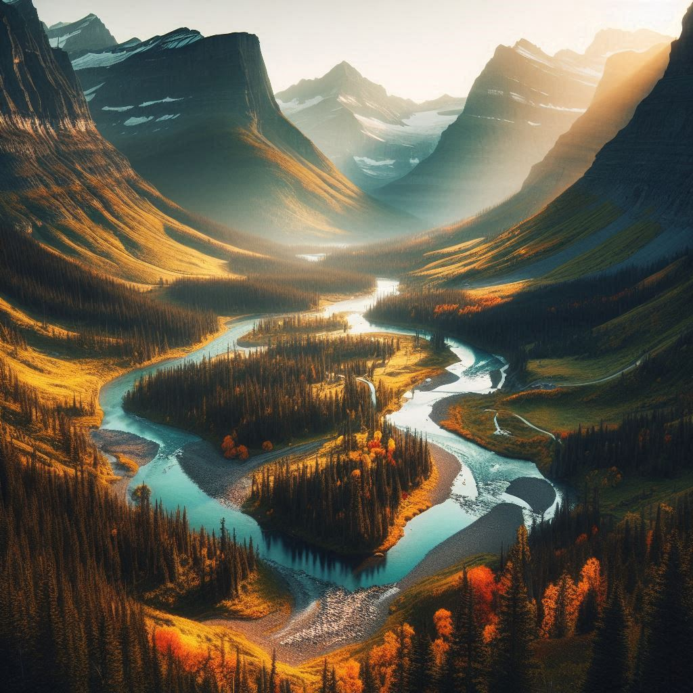

Explore the Beauty of Nature
Glacier National Park, located in the U.S. state of Montana, is a stunning destination that offers breathtaking views, diverse wildlife, and numerous outdoor activities. Known for its spectacular landscapes, the park features rugged mountains, pristine lakes, and lush forests. Whether you're an avid hiker, a wildlife enthusiast, or simply looking to unwind in nature, Glacier National Park has something for everyone.

Activities and Attractions
There are countless ways to enjoy your time at Glacier National Park. Here are a few highlights:
- Hiking Trails: With over 700 miles of trails, hikers of all skill levels can find a path to suit their preferences.
- Scenic Drives: Take a drive along the Going-to-the-Sun Road for some of the most breathtaking views in the park.
- Wildlife Watching: Keep an eye out for grizzly bears, mountain goats, and other native wildlife.
- Camping: Spend a night under the stars at one of the park's many campgrounds.
- Boating and Fishing: Enjoy the tranquility of the park's lakes and rivers.